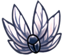

Character Upgrades
Mothwing Cloak
The Mothwing Cloak is the first movement upgrade that the Knight aquires on it's journey. The cloak allows the user to dash forward a short distance. This allows the player to cross distances that were previously impossible to conquer.
Mantis Claw
The mantis claw is a very useful movement upgrade. The knight is able to dig the claw into walls and then jump off of them. This allows the player to reach new heights by climbing up walls.

Crystal Heart
Crystal Heart is an upgrade which is very situational. When using this ability, the knight first charges up while standing still, then the player shoots forward at a very rapid pace, flying through the air. This allows the player to cross extremely long distances, but only with a little preperation.
Monarch Wings
The Monarch Wings are a very powerful upgrade for the knight. The wings allow the player to jump a 2nd time in the air. This gives the player a very large amount of freedom and versitility while traversing the world and fighting enemies.
Isma's Tear
Isma's Tear is a unique upgrade for the knight because it doesn't change the player's movement at all. The tear allows the knight to swim in the poisonous water that is scattered around Hollownest.

Shade Cloak
The Shade Cloak is an upgrade to the Mothwing Cloak. It allows the player to dash through shadow barriers, unlocking many areas in the world. It also allows the player to dash through enemies, which is very helpful in combat.